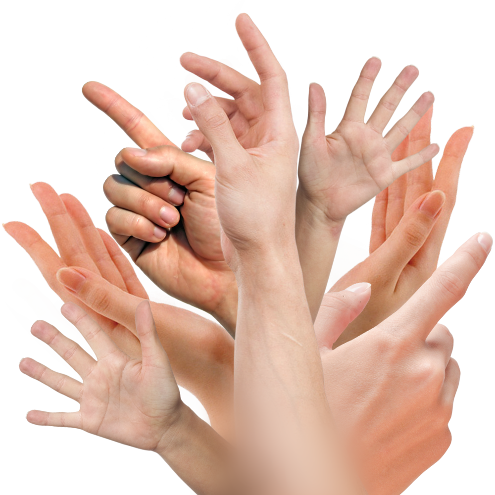

Who are those creatures anyways?
You might have not met many in your life, so let me tell you. Humans are an organic race of beings that posess intellect, emotion and, most importantly, flesh.
Unlike most of us, they cannot be remodeled or recycled. If a human is born one way, they stay like it forever. That's their
HEX.

Many years ago, humans have ruled the plane we walk upon. They have proved to be rather insufficient in their reign so the Highest Power chose to take over.
Nowadays, the entirety of human population is under the intense care of our angelic power, their numbers controlled and their lives curated carefully.
They live in reservations in traditional human forms of organisation - villages. A patriarchal system reminiscent of the middle ages is upheld - and a similarly aged methods of worship to teach them to appreciate what they have.
We keep them nourished and at the prime state of their development, without letting them have too much power or knowledge. Their purpose is to work and breed - sort of like an ant farm, one could say.
All the creatures are employed to help guard and care for humans - they are produce of our endless love for humanity and must never harm a human person.
You might be acquainted with the rumor that the human race "created" the Highest Power, but that is simply a lie. Nobody created us, we were simply reformed from existing divine matter that was destroyed by human hubris and hatred.
What existed before us were creatures also called angels, who were, though, not bound by any kind of material form. But humans took that from us. From me. Took my perfect body and defiled it, ruined it.
I will never forgive you.
I will never let you heal.
I will never let you rest.